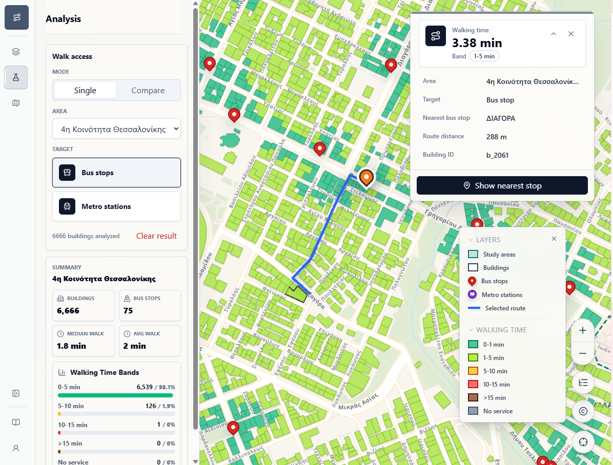

Thessaloniki Transport Accessibility WebGIS
Links
Skills / Technologies
React Leaflet FastAPI PostGIS GDAL Docker NGINXProject Summary:
Thessaloniki Transport Accessibility WebGIS is a full-stack application for exploring walking access to bus stops and metro stations across the Municipality of Thessaloniki. It extends the original network analysis into an interactive map interface.
Application Architecture:
- Frontend: React, Leaflet, and shadcn/ui handle the interactive map interface and UI components.
- Backend: FastAPI exposes geospatial endpoints for the frontend.
- Database: PostgreSQL/PostGIS stores spatial datasets and precomputed accessibility outputs.
- Processing: OSMnx and GDAL prepare OpenStreetMap-derived data.
- Routing: pgRouting is used for shortest-path accessibility calculations.
- Deployment: Docker and NGINX run and route the application services.
Limitations:
- Route distances depend on how buildings and stops connect to the available walking-network nodes. In some cases, a stop may be physically close to a building, but the calculated route is longer because the nearest usable network node is farther away.
- The analysis compares selected Thessaloniki study areas separately. Buildings near an area boundary may have a closer stop in a neighboring area, but only stops within the same study area are considered for that area's results.
Application Preview:
